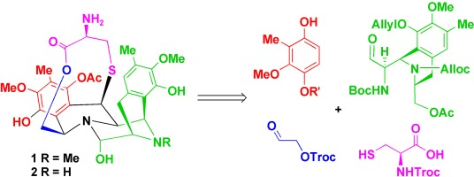
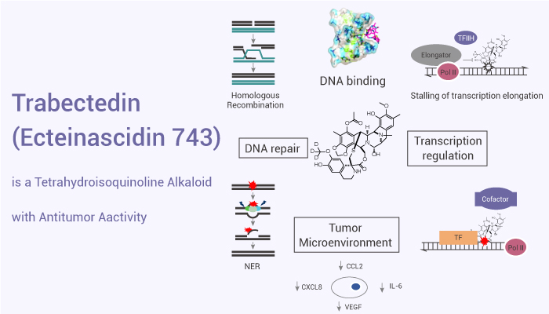

Ecteinascidin :
Ecteinascidin–743 (ET–743, Trabectedin) (46) is a tetrahydroisoquinoline alkaloid isolated from
the Caribbean marine tunicate Ecteinascidia turbinata. This compound contains three fused tetrahydroisoquinoline
rings. Trabectedin has previously been isolated from aquacultures and even produced synthetically, eventually
leading to the semisynthesis of ET–743 (49) from cyanosafracin B
- Origin
Ecteinascidia turbinata,
Pseudomonas fluorescens
- Structure-Activity Relationship (SAR)

- Mechanism Of Action
At micromolar concentration, Et-743 was found to inhibit a number of DNA-binding proteins,
including NF-Y, TATA binding protein, E2F, and SRF/TCF.12 It also activates the formation of topoisomerase
I-mediated cleavage complexes, and perturbs microtubule arrangement at this high range of
concentration.13–15 These bioactivities were observed at suprapharmacological concentrations of Et-743,
rendering these auxiliary effects of Et-743.

- Target Cells
L1210 leukaemia cells